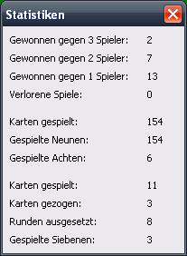

Statistiken

Gewonnen gegen 3 Spieler
Gibt an, wie oft Sie gewonnen haben, als noch drei andere Spieler Karten auf der Hand hatten.
In 4-Spieler-Spielen entspricht dies Platz 1.
Gewonnen gegen 2 Spieler
Gibt an, wie oft Sie gewonnen haben, als noch zwei andere Spieler Karten auf der Hand hatten.
In 4-Spieler-Spielen entspricht dies Platz 2. In 3-Spieler-Spielen Platz 1.
Gewonnen gegen 1 Spieler
Gibt an, wie oft Sie gewonnen haben, als noch ein anderer Spieler Karten auf der Hand hatte.
In 4-Spieler-Spielen entspricht dies Platz 3. In 3-Spieler-Spielen Platz 2. In 2-Spieler-Spielen Platz 1.
Verlorene Spiele
Gibt an, wie oft Sie der Spieler waren, der am Ende eines Spieles noch Karten auf der Hand hatte.
Karten gespielt
Gibt an, wie viele Karten sie insgesamt abgelegt haben.
Karten gezogen
Gibt an, wie viele Karten Sie insgesamt gezogen haben. Stapelkarten, sowie Karten, die Sie durch Siebenen aufgehoben haben.
Runden ausgesetzt
Gibt an, wie oft Sie insgesamt durch Achten aussetzen mussten.
Gespielte Siebenen
Gibt an, wie viele Siebenen Sie insgesamt ausgespielt haben.
Gespielte Achten
Gibt an, wie viele Achten Sie insgesamt ausgespielt haben.
Gespielte Neunen
Gibt an, wie viele Neunen Sie insgesamt ausgespielt haben.
Gespielte Buben
Gibt an, wie viele Buben Sie insgesamt ausgespielt haben.